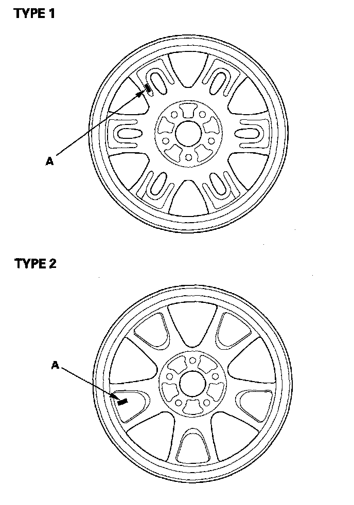

Tire Pressure Sensor Replacement
Tire Pressure Sensor ReplacementRemoval
1. Raise the vehicle, and support it with safety stands in the proper locations.
2. Remove the wheel with the faulty sensor.
3. Remove the tire valve cap and the valve core, and let the tire deflate.
4. Remove any balance weights, and then break the bead loose from the wheel with a commercially available tire changer (A).
NOTICE: Note these items to avoid damaging the tire pressure sensor:
- Do the outside of the wheel first.
- Position the wheel as shown so the valve stem (B) is 90 degrees from the bead breaker (C) as shown.
- Do not position the bead breaker of the tire changer too close to the rim.
5. Position the wheel so the tire machine (A) and tire iron (B) are next to the valve stem (C) and will move away from it when the machine starts. Then remove the tire from the wheel.
6. Remove the valve stem nut (A) and washer (B) then remove the tire pressure sensor with valve stem (C) from the wheel.
7. Remove and discard the valve stem grommet (A) from the tire pressure sensor (B).
NOTE:
- The valve stem grommet might stay in the wheel; make sure you remove it.
- Always use a new valve stem grommet whenever the tire pressure sensor has been removed from the wheel. When only removing a tire from the wheel, replace the valve stem grommet if it is possible.
Installation
NOTE:
- Use only wheels that have a "TPMS" stamp (A) on them.
- This vehicle may be equipped with either type 1 or type 2 wheels.

1. Before installing the tire pressure sensor, clean the mating surfaces on the sensor and the wheel.
2. Install the tire pressure sensor (A) and the washer (B) to the wheel (C) and tighten the valve stem nut (D) finger tight. Make sure the pressure sensor is resting on the wheel.

3. Tighten the valve stem nut to the specified torque while holding the tire pressure sensor.
NOTE: Do not use air or electric impact tools to tighten a valve stem nut.
4. Lube the tire bead, and position the wheel so the tire machine (A) and tire iron (B) are next to the valve stem (C) and will move away from it when the machine starts. Then install the tire onto the wheel.
5. Inflate the tire to 300 kPa (3.1 kgf/cm2, 44 psi) to seat the tire bead to the rim, then adjust the tire pressure.
NOTE: Make sure the tire bead is uniformly seated on both sides of the rim.
6. Check the valve stem nut tightening torque, then install the valve stem cap.
7. Check and adjust the wheel balance, then install the wheels on the vehicle. Torque the wheels to specifications.
8. Remove the jack stands, and lower the vehicle.
9. Connect the HDS and memorize the tire pressure sensor ID(s).